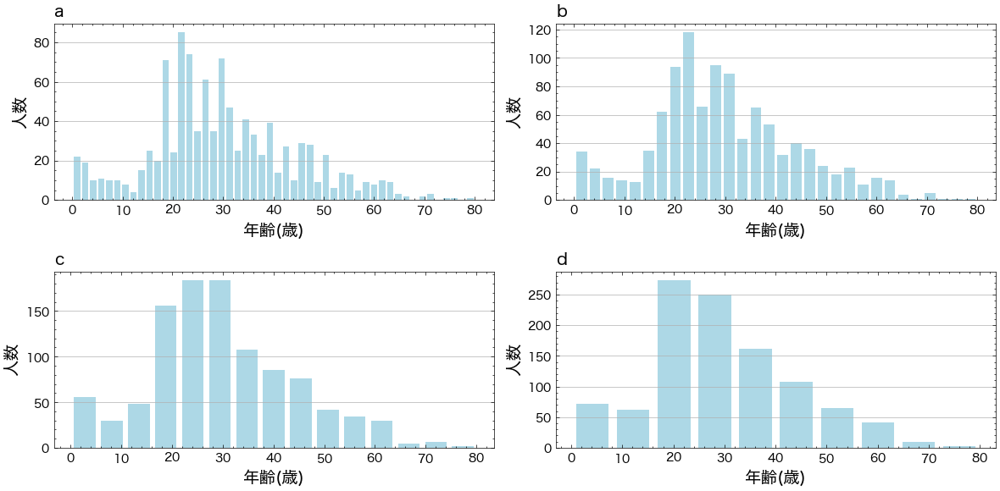
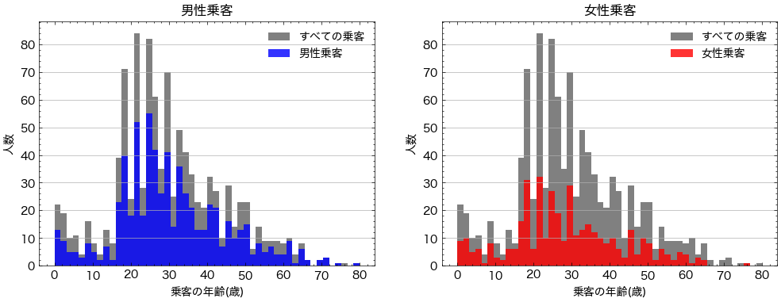

import pandas as pd
import matplotlib.pyplot as plt
import scienceplots
plt.style.use(['science','no-latex'])
from matplotlib import font_manager
# Path to your TTF file
ttf_path = './Noto_Sans_JP/NotoSansJP-VariableFont_wght.ttf'
# Register the font
font_manager.fontManager.addfont(ttf_path)
custom_font = font_manager.FontProperties(fname=ttf_path)
# Set the custom font as default
plt.rcParams['font.family'] = custom_font.get_name()
plt.rcParams['font.family'] = 'Hiragino Sans'
df=pd.read_csv("https://raw.githubusercontent.com/lvzeyu/css_tohoku/master/css_tohoku/draft/Data/titanic.csv")
fig, axs = plt.subplots(2, 2,figsize=(12,6))
axs[0, 0].hist(df["age"],bins=50,rwidth=0.8, color="lightblue")
axs[0, 0].set_xlabel("年齢(歳)",fontsize=14)
axs[0, 0].set_ylabel("人数",fontsize=14)
axs[0, 0].set_title("a",fontsize=14,loc="left")
axs[0, 0].grid(axis="y")
axs[0, 1].hist(df["age"],bins=30,rwidth=0.8, color="lightblue")
axs[0, 1].set_xlabel("年齢(歳)",fontsize=14)
axs[0, 1].set_ylabel("人数",fontsize=14)
axs[0, 1].set_title("b",fontsize=14,loc="left")
axs[0, 1].grid(axis="y")
axs[1, 0].hist(df["age"],bins=15,rwidth=0.8, color="lightblue")
axs[1, 0].set_xlabel("年齢(歳)",fontsize=14)
axs[1, 0].set_ylabel("人数",fontsize=14)
axs[1, 0].set_title("c",fontsize=14,loc="left")
axs[1, 0].grid(axis="y")
axs[1, 1].hist(df["age"],bins=10,rwidth=0.8, color="lightblue")
axs[1, 1].set_xlabel("年齢(歳)",fontsize=14)
axs[1, 1].set_ylabel("人数",fontsize=14)
axs[1, 1].set_title("d",fontsize=14,loc="left")
axs[1, 1].grid(axis="y")
# レイアウトを調整
plt.tight_layout()
# グラフを表示
plt.show()

fig.savefig("./Figure/age_hist.png",dpi=500)
df[df["sex"]=="male"]["age"]
1 0.9167
3 30.0000
5 48.0000
7 39.0000
9 71.0000
...
1302 NaN
1303 NaN
1306 26.5000
1307 27.0000
1308 29.0000
Name: age, Length: 843, dtype: float64
fig, axs = plt.subplots(1, 2,figsize=(12,4))
axs[0].hist(df["age"],bins=50,color="gray",range=(0, 80),label="すべての乗客")
axs[0].hist(df[df["sex"]=="male"]["age"],bins=50,color="blue",alpha=0.8,range=(0, 80),label="男性乗客")
axs[0].set_xlabel("乗客の年齢(歳)")
axs[0].set_ylabel("人数")
axs[0].set_title("男性乗客")
axs[0].legend()
axs[0].grid(axis="y")
axs[1].hist(df["age"],bins=50,color="gray",range=(0, 80),label="すべての乗客")
axs[1].hist(df[df["sex"]=="female"]["age"],bins=50,color="red",alpha=0.8,range=(0, 80),label="女性乗客")
axs[1].set_xlabel("乗客の年齢(歳)")
axs[1].set_ylabel("人数")
axs[1].set_title("女性乗客")
axs[1].legend()
axs[1].grid(axis="y")

fig.savefig("./Figure/age_sex_hist.png",dpi=500)